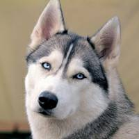
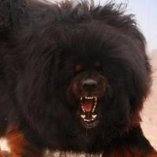
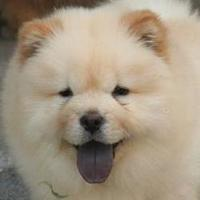
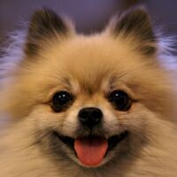
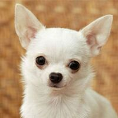
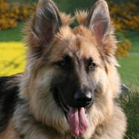
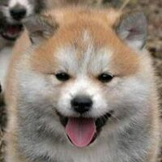
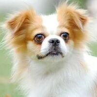

|  |
1:哈士奇
中型、短毛、容易饲养、工作犬、雪橇犬
价格：￥1500-3000
优点：漂亮、温顺友好、活泼好动、热情、不爱叫、喂食量少、爱干净
缺点：神经质、十足的破坏分子、极度自由散漫、特殊的肠胃、精力旺盛、极度热情、无视你的存在、不能看家护主 |
|
|  |
2:藏獒
超大型、长毛、容易饲养、工作犬
价格：￥5000-10000
优点：忠诚、护主性强、高贵、凶猛、一生只认一个主人
缺点:倔强、对陌生人不友好、运动量大、饮食要求高 |
|
|  |
3:松狮犬
超大型、长毛、容易饲养、看家犬
价格：￥2000-4000
优点：十分文静、性格高雅、从不破坏、体味轻、忠诚
缺点：傲慢、固执、自主性强、易怒 |
|
|  |
4 .边境牧羊犬
中型、长毛、容易饲养、牧羊犬
价格：￥1500-3000
优点：智商高服从性高漂亮团结热情谨慎
缺点：胆小精力旺盛运动大基因不稳
|
|
|  |
5 .吉娃娃
小型、短毛、容易饲养、玩赏犬
价格：￥1000-2000
优点：身材娇小灵活喂食简单好打理活泼
缺点：性格怪异体质弱易任性不耐寒
|
|
|  |
6.德国牧羊犬
大型、短毛、容易饲养
价格：2000-6000
优点：忠诚、智商高、好训练、大型犬、短毛好清理、牵出去拉风
缺点：叫很大声、体味大、食欲很大、攻击性很强
|
|
|  |
7.秋田犬
超大型、短毛、容易饲养
价格：3000-5000
优点：温顺、感觉敏锐、身强力壮、勇敢、易训练、强健、健壮
缺点：好斗、依恋性太强、太兴奋、饲养空间大
|
|
|  |
8.蝴蝶犬
小型、短毛、容易饲养、玩赏犬
价格：4000-6000
优点：体味很轻、智商高、友善、可爱、不爱吠叫、不会脱毛、好打理
缺点：稍粘人、较调皮
|
|
|
9.博美犬
小型、长毛、容易饲养、玩赏犬、伴侣犬
价格：2000-6000
优点：小巧可爱、无体臭、安全、掉毛少、健康、饲养成本低
缺点：粘人、喜吠叫、易兴奋、警惕低、粘人
|
|
|
10.杜宾犬
超大型、短毛、容易饲养、工作犬
价格：2000-6000
优点：养的人太少没数据
缺点：养的人太少没数据
|
|
|
11.柴犬
中型、短毛、容易饲养、看家犬
价格：3000-8000
优点：习性聪明、清洁、护卫性强、忠诚、易训练、性格沉稳、地域观念强、敏锐
缺点：固执、太独立、唱反调、易走丢、易患皮肤病
|
|
|
12.大丹犬
超大型、短毛、难饲养、工作犬
价格：2000-6000
优点：优雅、高贵、具有王者气质、感情丰富、体贴、忠诚心强
缺点：易患病、寿命短
|